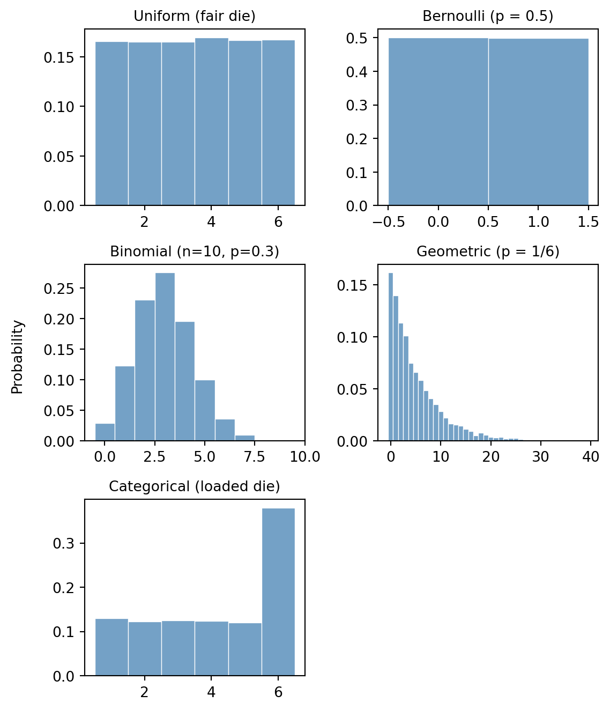
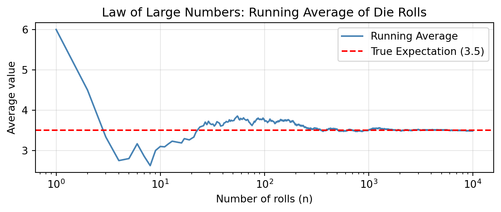
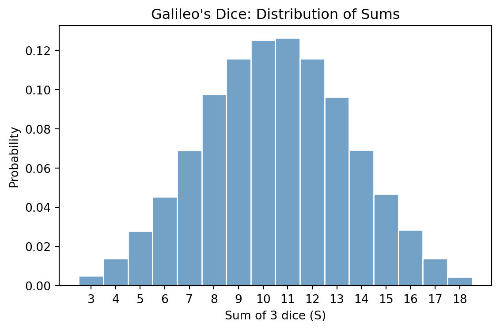

import torch
from torch.distributions import Bernoulli, Binomial, Geometric, Categorical
import seaborn as sns
import matplotlib.pyplot as plt
N = 10_000
torch.manual_seed(42)
# 1. Discrete Uniform: fair six-sided die (values 1–6)
uniform_samples = Categorical(probs=torch.ones(6)).sample((N,)) + 1
# 2. Bernoulli (p = 0.5): fair coin flip
bernoulli_samples = Bernoulli(probs=torch.tensor(0.5)).sample((N,))
# 3. Binomial (n = 10, p = 0.3): successes in 10 trials
binom_samples = Binomial(total_count=10, probs=torch.tensor(0.3)).sample((N,))
# 4. Geometric (p = 1/6): failures before first 6
geom_samples = Geometric(probs=torch.tensor(1 / 6)).sample((N,))
# 5. Categorical: loaded die with weights [1, 1, 1, 1, 1, 3]
loaded_probs = torch.tensor([1, 1, 1, 1, 1, 3], dtype=torch.float)
cat_samples = Categorical(probs=loaded_probs).sample((N,)) + 1Exercise 1: Classic puzzles
Some of the best-known puzzles in probability are famous precisely because the correct answer defies most people’s intuition. In this exercise sheet, we use simulation to tackle several of these classics, estimating probabilities and expectations via sampling and the Law of Large Numbers.
Background: Expectation and the Law of Large Numbers
Expectation
If you roll a fair die many times and average the results, you will get a number close to \(3.5\). This is intuitive: each face appears roughly \(1/6\) of the time, so the average is approximately
\[ \frac{1}{6}\cdot 1 + \frac{1}{6}\cdot 2 + \cdots + \frac{1}{6}\cdot 6 = 3.5. \]
This motivates the general definition. Given a finite set \(\Omega\) with a probability distribution \(p\), the expectation of a function \(t \colon \Omega \to \mathbb{R}\) is:
\[ \mathbb{E}_{p(\omega)}[t(\omega)] := \sum_{\omega \in \Omega} t(\omega)\, p(\omega). \]
Each outcome is weighted by its probability. This is exactly what averaging over many samples approximates. In the die example, \(\Omega = \{1, \ldots, 6\}\) with uniform distribution \(p\), and \(t\) is the identity function \(t(\omega) := \omega\).
The function \(t\) is a measurement or test function. It extracts a numerical quantity from each outcome. Two useful ways to think about \(\mathbb{E}_{p(\omega)}[t(\omega)]\):
- Fair price of a gamble: If a game pays out \(t(\omega)\) dollars on outcome \(\omega\), then \(\mathbb{E}_{p(\omega)}[t(\omega)]\) is the entry fee at which neither side has an advantage.
- Best single-number summary: \(\mathbb{E}_{p(\omega)}[t(\omega)]\) is the constant \(c\) that minimizes \(\mathbb{E}_{p(\omega)}[(t(\omega) - c)^2].\) In this sense it is the single number that best represents the distribution of \(t\)-values.
The Law of Large Numbers
The averaging intuition above is made precise by the Law of Large Numbers (LLN). If \(\omega_1, \omega_2, \ldots\) are independent draws from \(p\), then for any \(t \colon \Omega \to \mathbb{R}\):
\[ \frac{1}{N}\sum_{i=1}^N t(\omega_i) \;\longrightarrow\; \mathbb{E}_{p(\omega)}[t(\omega)] \quad \text{as } N \to \infty. \]
For our purposes, this means that we can estimate any expectation by sampling: draw \(N\) samples from \(p\), apply \(t\) to each, and average. For large enough \(N\), the result will be close to the true expectation. This is the core idea behind Monte Carlo estimation, which forms the basis of this course.
Estimating probabilities
For any event \(E \subseteq \Omega\), the indicator function \(\mathbf{1}_E : \Omega \to \mathbb{R}\) equals 1 on outcomes in \(E\) and 0 otherwise:
\[ \mathbf{1}_E(\omega) := \begin{cases} 1 & \text{if } \omega \in E, \\ 0 & \text{if } \omega \notin E. \end{cases} \]
Task 1. (Easy.) Show that \(\mathbb{E}_{p(\omega)}[\mathbf{1}_E(\omega)] = P(E)\).
TipSolution
By definition of expectation, \[ \mathbb{E}_{p(\omega)}[\mathbf{1}_E(\omega)] = \sum_{\omega \in \Omega} \mathbf{1}_E(\omega)\, p(\omega) = \sum_{\omega \in E} p(\omega) = P(E). \]
By the Law of Large Numbers, this means we can estimate any probability by sampling and counting the fraction of samples that fall in \(E\):
\[ P(E) \approx \frac{1}{N} \sum_{i=1}^N \mathbf{1}_E(\omega_i). \]
Rejection sampling from the conditional distribution
Often we want to estimate a quantity that depends not on the full distribution \(p\), but on the conditional distribution \(p(\,\cdot \mid F)\) given some observed event \(F\). By the Law of Large Numbers, it suffices to generate samples from \(p(\,\cdot \mid F)\) — but how do we do that when we only know how to sample from \(p\)?
The simplest strategy is rejection sampling (also called conditioning by filtering): draw many samples from \(p\) and discard every sample that does not lie in \(F\). The surviving samples behave as draws from the conditional distribution and can be used to estimate conditional expectations.
NoteRejection sampling
To estimate an expectation \(\mathbb{E}_{p(\omega \mid F)}[t(\omega)]\):
- Draw \(N\) independent samples \(\omega_1, \dots, \omega_N \sim p\).
- Filter the samples, keeping only those where \(\omega_i \in F\).
- Compute the average of \(t(\omega)\) over the surviving samples.
The fraction of samples that survive is called the acceptance rate and converges to \(p(F)\).
Task 2. (Tricky. Requires some probability knowledge.) Show that this procedure correctly estimates the conditional expectation \(\mathbb{E}_{p(\omega \mid F)}[t(\omega)]\). Further, show that the acceptance rate converges to \(p(F)\).
TipSolution
We can prove this directly using the LLN. By definition, the conditional expectation is: \[ \mathbb{E}_{p(\omega \mid F)}[t(\omega)] = \sum_{\omega \in \Omega} t(\omega) p(\omega \mid F) = \sum_{\omega \in \Omega} t(\omega) \frac{p(\{\omega\} \cap F)}{p(F)} = \sum_{\omega \in F} t(\omega) \frac{p(\omega)}{p(F)} = \frac{\mathbb{E}_{p(\omega)}[t(\omega) \mathbf{1}_F(\omega)]}{p(F)} \]
If we draw \(N\) independent samples \(\omega_1, \dots, \omega_N\) from \(p\), the LLN lets us estimate the numerator and denominator separately: \[ \mathbb{E}_{p(\omega)}[t(\omega) \mathbf{1}_F(\omega)] \approx \frac{1}{N} \sum_{i=1}^N t(\omega_i) \mathbf{1}_F(\omega_i) \quad \text{and} \quad p(F) \approx \frac{1}{N} \sum_{i=1}^N \mathbf{1}_F(\omega_i) \]
Taking their ratio, the factors of \(1/N\) cancel: \[ \frac{\sum_{i=1}^N t(\omega_i) \mathbf{1}_F(\omega_i)}{\sum_{i=1}^N \mathbf{1}_F(\omega_i)} = \frac{\sum_{j=1}^{N_s} t(\bar \omega_j) }{N_s}, \]
where \(\bar \omega_1, \ldots, \bar \omega_{N_s}\) are the surviving samples and \(N_s\) is their count. The right-hand side is precisely the average of \(t\) over the surviving samples. As \(N \to \infty\), both LLN estimates converge to their true values, so the ratio converges to \(\mathbb{E}_{p(\omega \mid F)}[t(\omega)]\), by the continuous mapping theorem. This validates the rejection sampling procedure.
Finally, the acceptance rate is the fraction of samples that survive the filter: \(\frac{1}{N} \sum_{i=1}^N \mathbf{1}_F(\omega_i)\). By the LLN, this converges to \(\mathbb{E}_{p(\omega)}[\mathbf{1}_F(\omega)] = p(F)\).
Warm-up: Simulating discrete distributions
Before tackling the puzzles, we set up a basic sampling toolkit. Each distribution below is a building block for the simulations that follow. The goal is to get comfortable generating random samples in Python. We recommend using torch.distributions for sampling, matplotlib for general plotting, and seaborn for statistical plots like histograms. You can find a short tutorial on using PyTorch for sampling in the Appendix.
Distributions to know:
- Discrete Uniform — rolling a fair die. Each of the \(k\) outcomes is equally likely.
- Bernoulli — a single coin flip with two outcomes (success/failure).
- Binomial — the number of successes in \(n\) independent Bernoulli trials.
- Geometric — the number of failures before the first success. (Warning: Sometimes defined as the number of trials until the first success, which is 1 plus the version we use here.)
- Categorical — a loaded die or weighted lottery. Generalizes the uniform distribution to unequal probabilities. Can be used to simulate any discrete distribution by assigning the appropriate probabilities to each outcome.
Task 3. For each distribution above, choose concrete parameters, sample \(N = 10\,000\) values, and plot a histogram of the results.
TipSolution
We plot the histograms of the results using seaborn.histplot.
Code
fig, axes = plt.subplots(3, 2, figsize=(6, 7))
axes = axes.flatten()
panels = [
(uniform_samples, "Uniform (fair die)", None),
(bernoulli_samples, "Bernoulli (p = 0.5)", None),
(binom_samples, "Binomial (n=10, p=0.3)", None),
(geom_samples, "Geometric (p = 1/6)", 40),
(cat_samples, "Categorical (loaded die)", None),
]
for ax, (data, title, clip) in zip(axes, panels):
vals = data.int().numpy()
lo, hi = int(vals.min()), int(vals.max())
if clip:
hi = min(hi, clip)
vals = vals[vals <= clip]
bins = list(range(lo, hi + 2))
sns.histplot(
vals,
bins=bins,
discrete=True,
stat="probability",
ax=ax,
color="steelblue",
edgecolor="white",
linewidth=0.5,
)
ax.set_title(title, fontsize=10)
ax.set_xlabel("")
ax.set_ylabel("")
axes[5].set_visible(False) # hide unused panel
fig.supylabel("Probability", fontsize=10)
plt.tight_layout()
plt.show()
Task 4. Roll a fair die \(N = 10\,000\) times. Plot the running average (i.e. the cumulative mean after each roll) as a function of the number of rolls on a logarithmic scale. Overlay the true expectation \(3.5\) as a horizontal line. Observe how the running average converges. Hint: Use torch.cumsum to compute cumulative sums.
TipSolution
First, we simulate the die rolls and compute the running average using torch.cumsum.
N = 10_000
torch.manual_seed(41)
# Roll a fair 6-sided die N times
die_rolls = Categorical(probs=torch.ones(6)).sample((N,)) + 1
# Compute the running average
n_rolls = torch.arange(1, N + 1)
running_average = torch.cumsum(die_rolls, dim=0) / n_rollsNext, we plot the running average on a logarithmic scale and overlay the true expectation:
Code
import matplotlib.pyplot as plt
plt.figure(figsize=(7, 3))
plt.plot(
n_rolls.numpy(),
running_average.numpy(),
label="Running Average",
color="steelblue",
linewidth=1.5,
)
plt.axhline(y=3.5, color="red", linestyle="--", label="True Expectation (3.5)")
plt.xscale("log")
plt.xlabel("Number of rolls (n)")
plt.ylabel("Average value")
plt.title("Law of Large Numbers: Running Average of Die Rolls")
plt.legend()
plt.grid(True, alpha=0.3)
plt.tight_layout()
plt.show()
Dice problems
Dice were among the first objects studied probabilistically. Here we revisit two classic dice problems and solve them by simulation.
De Méré’s problem
The Chevalier de Méré, a French nobleman and avid gambler, suspected that getting at least one 6 in four rolls of a single die was more likely than getting at least one double-six in 24 rolls of two dice. He posed the question to Blaise Pascal, who confirmed his intuition.
Task 5a. Write a function one_six(N) that simulates this experiment \(N\) times:
- Roll a single die 4 times.
- Check whether at least one roll is a 6.
Return the fraction of trials where this occurs. Report the estimate for \(N = 100\,000\).
Task 5b. Write a function double_six(N) that simulates the following experiment \(N\) times:
- Roll two dice 24 times.
- Check whether at least one roll is a double-six (both dice show 6).
Return the fraction of trials where this occurs. Report the estimate for \(N = 100\,000\).
Task 5c. What are the exact probabilities for both experiments? How do they compare to the estimates?
TipSolution
def one_six(N):
# Roll a single die 4 times for N trials
# Shape: (N, 4)
rolls = Categorical(probs=torch.ones(6)).sample((N, 4)) + 1
# Check if at least one roll is a 6 in each trial
# rolls == 6 creates a boolean tensor of shape (N, 4)
# .any(dim=1) checks if there's at least one True in each row
has_six = (rolls == 6).any(dim=1)
return has_six.float().mean().item()def double_six(N):
# Roll two dice 24 times for N trials
# Shape: (N, 24, 2)
rolls = Categorical(probs=torch.ones(6)).sample((N, 24, 2)) + 1
# Check if both dice are 6
# Shape: (N, 24)
is_double_six = (rolls[:, :, 0] == 6) & (rolls[:, :, 1] == 6)
# Check if at least one double-six occurred in the 24 rolls
has_double_six = is_double_six.any(dim=1)
return has_double_six.float().mean().item()We simulate both experiments with \(N = 100\,000\) and report the results:
Code
N = 100_000
torch.manual_seed(42)
p_one_six = one_six(N)
p_double_six = double_six(N)
print(f"P(at least one 6 in 4 rolls): {p_one_six:.4f}")
print(f"P(at least one double-6 in 24 rolls): {p_double_six:.4f}")P(at least one 6 in 4 rolls): 0.5186
P(at least one double-6 in 24 rolls): 0.4893The exact answer can be computed using \(p(E) = 1 - p(E^c)\). For the first experiment, the complement event is “no 6 in 4 rolls”, which has probability \((5/6)^4\). For the second experiment, the complement is “no double-6 in 24 rolls”. The probability of not getting a double-6 in a single roll of two dice is \(35/36\), so the complement has probability \((35/36)^{24}\). Thus, the first experiment has probability \(1 - (5/6)^4 \approx 0.5177\), while the second has probability \(1 - (35/36)^{24} \approx 0.4914\).
Galileo and the Grand Duke’s dice
Around 1620, Cosimo II de’ Medici noticed that when rolling three dice, the sum 10 appeared more often than 9, even though both can be written as a sum of three integers (from 1 to 6) in exactly 6 ways. He asked Galileo to explain.
Task 6. Simulate rolling 3 fair dice \(N = 100\,000\) times. Compute the sum \(S = D_1 + D_2 + D_3\) for each trial. Plot a histogram of \(S\) and confirm that \(p(S = 10) > p(S = 9)\).
TipSolution
N = 100_000
torch.manual_seed(42)
# Roll 3 dice N times
# Shape: (N, 3)
dice_rolls = Categorical(probs=torch.ones(6)).sample((N, 3)) + 1
# Compute the sum of the 3 dice for each trial
# Shape: (N,)
S = dice_rolls.sum(dim=1)
# Estimate probabilities
p_9 = (S == 9).float().mean().item()
p_10 = (S == 10).float().mean().item()
print(f"p(S = 9): {p_9:.4f}")
print(f"p(S = 10): {p_10:.4f}")p(S = 9): 0.1157
p(S = 10): 0.1252We plot the histogram of the sums using seaborn.histplot:
Code
plt.figure(figsize=(6, 4))
sns.histplot(
S.numpy(),
bins=range(3, 20),
discrete=True,
stat="probability",
color="steelblue",
edgecolor="white",
)
plt.xticks(range(3, 19))
plt.xlabel("Sum of 3 dice (S)")
plt.ylabel("Probability")
plt.title("Galileo's Dice: Distribution of Sums")
plt.tight_layout()
plt.show()
The following box contains and explanation of why a sum of 10 is more likely than a sum of 9, even though both have the same number of partitions into three parts from \(\{1, \ldots, 6\}\). If you want, you can try to figure it out yourself before reading it.
NoteWhy does 10 beat 9?
A partition of a number is a way to write it as an unordered sum (e.g. \(\{1, 2, 6\}\) is a partition of 9). Both 9 and 10 have exactly 6 partitions into three parts from \(\{1,\ldots,6\}\). However, when we take \(\{1,\ldots,6\}^3\) as the set of all possible outcomes, we are assuming that we can distinguish which die shows which face — in other words, order matters. Thus the relevant favorable outcomes are ordered partitions (permutations of a partition). For example, the partition \(\{1, 2, 6\}\) gives rise to \(3! = 6\) ordered outcomes: \((1,2,6)\), \((1,6,2)\), \((2,1,6)\), etc. It happens that 10 has more ordered partitions than 9, since 9 includes the partition \(\{3, 3, 3\}\) which has only 1 ordering.
Bertrand’s box paradox
Bertrand’s box paradox, posed by Joseph Bertrand in 1889, is a probability puzzle where naive intuition leads most people astray.
The setup. There are three boxes:
- Box 1: contains 2 gold coins.
- Box 2: contains 2 silver coins.
- Box 3: contains 1 gold coin and 1 silver coin.
You pick a box uniformly at random. Without looking inside, you reach in and draw one coin — it turns out to be gold. What is the probability that the other coin in the same box is also gold?
Simulating the experiment
Task 7a. Write a function bertrand_box(N) that simulates the full experiment \(N\) times:
- Pick one of the three boxes uniformly at random.
- Pick one of the two coins in that box uniformly at random — this is your drawn coin.
- Record the color of the drawn coin and the color of the remaining coin.
Run \(N = 100\,000\) simulations.
TipSolution
def bertrand_box(N):
# Represent Gold as 1, Silver as 0
# Box 0: Gold, Gold -> [1, 1]
# Box 1: Silver, Silver -> [0, 0]
# Box 2: Gold, Silver -> [1, 0]
boxes = torch.tensor([[1, 1], [0, 0], [1, 0]], dtype=torch.long)
# 1. Pick a box uniformly at random
box_indices = Categorical(probs=torch.ones(3)).sample((N,))
# 2. Pick one of the two coins in that box uniformly at random
coin_indices = Categorical(probs=torch.ones(2)).sample((N,))
# Retrieve the drawn coin
# We use advanced indexing: boxes[row_indices, col_indices]
drawn_coin = boxes[box_indices, coin_indices]
# 3. Identify the other coin
# The other coin is at index (1 - coin_indices)
other_coin_indices = 1 - coin_indices
other_coin = boxes[box_indices, other_coin_indices]
return drawn_coin, other_coin
N = 100_000
torch.manual_seed(42)
drawn_coins, other_coins = bertrand_box(N)Conditioning by filtering
Task 7b. Using rejection sampling on the \(N\) simulations above, estimate both \(P(\text{other coin is gold} \mid \text{drawn coin is gold})\) and \(P(\text{other coin is gold} \mid \text{drawn coin is silver})\). For each conditioning event:
- Filter: keep only the trials matching the condition (e.g. drawn coin is gold).
- Among the survivors, compute the fraction where the other coin is also gold.
- Compute the acceptance rate — what fraction of trials survived the filter?
Explain why both acceptance rates are approximately \(1/2\).
TipSolution
# Estimate p(other is gold | drawn is gold)
# Filter: Keep only trials where drawn coin is gold (1)
is_drawn_gold = drawn_coins == 1
other_given_gold = other_coins[is_drawn_gold]
# Estimate probability
p_other_gold_given_gold = other_given_gold.float().mean().item()
acceptance_rate = is_drawn_gold.float().mean().item()
print(f"P(other is gold | drawn is gold): {p_other_gold_given_gold:.4f}")
print(f"Acceptance rate: {acceptance_rate:.4f}")
# Estimate p(other is gold | drawn is silver)
# Filter: Keep only trials where drawn coin is silver (0)
is_drawn_silver = drawn_coins == 0
other_given_silver = other_coins[is_drawn_silver]
# Estimate probability
p_other_gold_given_silver = other_given_silver.float().mean().item()
acceptance_rate = is_drawn_silver.float().mean().item()
print(f"P(other is gold | drawn is silver): {p_other_gold_given_silver:.4f}")
print(f"Acceptance rate: {acceptance_rate:.4f}")P(other is gold | drawn is gold): 0.6649
Acceptance rate: 0.5007
P(other is gold | drawn is silver): 0.3316
Acceptance rate: 0.4993Explanation of acceptance rate: The acceptance rate is the marginal probability of drawing a gold coin, \(P(\text{drawn coin is gold})\). There are 6 coins in total across the three boxes: 3 gold and 3 silver. Since each coin is equally likely to be picked (by symmetry of picking a box then a coin), the probability of drawing a gold coin is exactly \(3/6 = 1/2\).
Exact computation
Task 7c. Use Bayes’ theorem to compute the exact answer.
Hint: Let \(G\) be the event of drawing gold, and \(B_i\) the event of picking Box \(i\). Determine \(p(G \mid B_i)\) for each \(i \in \{1,2,3\}\), then apply Bayes’ rule to find \(P(B_i \mid G)\).
TipSolution
We use the notation from the hint. Observe that \(p(\text{other is gold} \mid G) = p(B_1 \mid G)\) since the other coin is gold if and only if we are in Box 1.
By Bayes’ theorem: \[ p(B_1 \mid G) = \frac{p(G \mid B_1) p(B_1)}{p(G)} \]
We know:
- \(p(B_1) = p(B_2) = p(B_3) = 1/3\) (boxes are chosen uniformly).
- \(p(G \mid B_1) = 1\) (Box 1 has 2 gold coins).
- \(p(G \mid B_2) = 0\) (Box 2 has 0 gold coins).
- \(p(G \mid B_3) = 1/2\) (Box 3 has 1 gold, 1 silver).
By marginalization, the total probability of drawing gold is: \[ p(G) = p(G \mid B_1)p(B_1) + p(G \mid B_2)p(B_2) + p(G \mid B_3)p(B_3) = 1 \cdot \frac{1}{3} + 0 \cdot \frac{1}{3} + \frac{1}{2} \cdot \frac{1}{3} = \frac{1}{3} + \frac{1}{6} = \frac{1}{2}. \]
Substituting back: \[ p(B_1 \mid G) = \frac{1 \cdot (1/3)}{1/2} = \frac{1/3}{1/2} = \frac{2}{3}. \]
So the probability that the other coin is gold is 2/3.
Task 7d. Can you arrive at the answer without any calculations?
Hint: Think about all six coins individually, rather than reasoning at the level of boxes.
TipIntuitive explanation
Imagine that instead of picking a box and then a coin, you simply pick one of the six coins at random (since boxes and coins are chosen uniformly, every coin has an equal \(1/6\) chance of being picked).
We are told that the coin you picked is gold. There are only 3 gold coins in the whole game:
- Two of them are in Box 1 (the GG box).
- One of them is in Box 3 (the GS box).
If you picked one of the two gold coins from Box 1, the other coin in the box is also gold. If you picked the single gold coin from Box 3, the other coin in the box is silver.
Since you are equally likely to have picked any of these 3 gold coins, in 2 out of 3 cases, the other coin is gold. Thus, the probability is \(2/3\).
The Monty Hall problem
The Monty Hall problem is one of the most famous puzzles in probability, named after the host of the American television game show Let’s Make a Deal. It became widely known in 1990 when Marilyn vos Savant published the correct solution in her magazine column, prompting thousands of readers — including many professional mathematicians — to write in insisting she was wrong.
The setup. A game show host presents you with three doors. Behind one door is a car; behind the other two are goats. The game proceeds in three steps:
- You pick a door (say door 1).
- The host opens another door to reveal a goat. The host knows what is behind each door and will always open a door with a goat.
- You are offered a choice: stick with your original door, or switch to the remaining unopened door.
Should you switch? Use simulation to find out.
Simulating the standard game
Task 8. Write a function monty_hall(N) that simulates the full game \(N\) times:
- Place the car uniformly at random behind one of the three doors.
- The contestant picks door 1.
- The host opens a door (not the contestant’s, not the car’s) to reveal a goat. If the host has a choice of two goat doors, the host picks one uniformly at random.
- Record the identity of the door the host opens, whether staying wins, and whether switching wins.
Run \(N = 100\,000\) simulations. Estimate the probabilities of winning by staying and by switching.
TipSolution
def monty_hall(N):
# 1. Car is placed uniformly at random behind door 0, 1, or 2
car_door = Categorical(probs=torch.ones(3)).sample((N,))
# 2. Contestant picks door 0 (representing "door 1")
pick_door = torch.zeros(N, dtype=torch.long)
# 3. Host opens a door
# If contestant picked the car, host randomly picks one of the other two doors
# The other two doors are (pick_door + 1) % 3 and (pick_door + 2) % 3
random_shift = Categorical(probs=torch.ones(2)).sample((N,)) + 1
host_door_if_match = (pick_door + random_shift) % 3
# If contestant picked a goat, host must pick the remaining door
# Since doors sum to 3 (0 + 1 + 2), the remaining door is 3 - car_door - pick_door
host_door_if_diff = 3 - car_door - pick_door
host_door = torch.where(
car_door == pick_door, host_door_if_match, host_door_if_diff
)
# 4. Contestant switches to the remaining unopened door
switch_door = 3 - pick_door - host_door
# Calculate win probabilities
win_stay = pick_door == car_door
p_stay = win_stay.float().mean().item()
win_switch = switch_door == car_door
p_switch = win_switch.float().mean().item()
return p_stay, p_switchWe now run the simulation with \(N = 100\,000\) and report the results:
Code
N = 100_000
torch.manual_seed(42)
p_stay, p_switch = monty_hall(N)
print(f"p(win by staying): {p_stay:.4f}")
print(f"p(win by switching): {p_switch:.4f}")p(win by staying): 0.3329
p(win by switching): 0.6671The answer — which surprises most people — is that switching wins with probability \(2/3\), while staying wins with probability \(1/3\). The key insight is that the host’s action gives you information: by always revealing a goat, the host concentrates the probability of the two doors you didn’t pick onto the single remaining door.
Host variants — the generating mechanism matters
Much of the controversy surrounding the Monty Hall problem stems from the fact that the problem statement doesn’t always make the host’s strategy explicit. Different assumptions about why the host opens a door lead to different conditional probabilities — even when the observable event (you see a goat) is the same. This is a crucial lesson: getting conditioning right requires a precise model of the data-generating process, not just a description of what was observed.
Task 9a. (The ignorant host) The host does not know where the car is and simply opens one of the two remaining doors uniformly at random. If the host accidentally reveals the car, the game is void. Simulate this variant. Among the non-void games (where the host happened to reveal a goat), estimate the conditional probability of winning by switching given that the host revealed a goat. Is the anwer what you expected?
TipSolution
def monty_hall_ignorant(N):
# 1. Car is placed uniformly at random behind door 0, 1, or 2
car_door = Categorical(probs=torch.ones(3)).sample((N,))
# 2. Contestant picks door 0
pick_door = torch.zeros(N, dtype=torch.long)
# 3. Host opens a door uniformly at random from the two remaining doors
random_shift = Categorical(probs=torch.ones(2)).sample((N,)) + 1
host_door = (pick_door + random_shift) % 3
# Filter out void games where the host accidentally revealed the car
valid_games = host_door != car_door
# Keep only the valid games
car_door_valid = car_door[valid_games]
pick_door_valid = pick_door[valid_games]
host_door_valid = host_door[valid_games]
# 4. Contestant switches to the remaining unopened door
switch_door = 3 - pick_door_valid - host_door_valid
# Calculate win probabilities among valid games
win_stay = pick_door_valid == car_door_valid
p_stay = win_stay.float().mean().item()
win_switch = switch_door == car_door_valid
p_switch = win_switch.float().mean().item()
return p_stay, p_switchCode
N = 100_000
torch.manual_seed(42)
p_stay_ignorant, p_switch_ignorant = monty_hall_ignorant(N)
print(f"Ignorant host - p(win by staying): {p_stay_ignorant:.4f}")
print(f"Ignorant host - p(win by switching): {p_switch_ignorant:.4f}")Ignorant host - p(win by staying): 0.4982
Ignorant host - p(win by switching): 0.5018Task 9b. (The malicious host) Without simulating, determine the answer for the following variant: The host knows where the car is and only offers the switch when the contestant has picked the car. What is the conditional probability of winning by switching given that you are offered the switch?
Task 9c. (The benevolent host) Same question, but now the host knows where the car is and only offers the switch when the contestant has picked a goat. What is the conditional probability of winning by switching given that you are offered the switch?
TipSolution
In the malicious host variant, the host only offers the switch when the contestant has already won by picking the car. Thus, if you are offered the switch, you know you have already won by staying, so switching would cause you to lose. Therefore, \(p(\text{win by switching} \mid \text{offered switch}) = 0\).
Similarly, in the benevolent host variant, the host only offers the switch when the contestant has picked a goat. If you are offered the switch, you know you have already lost by picking a goat, so switching would cause you to win. Therefore, \(p(\text{win by switching} \mid \text{offered switch}) = 1\).